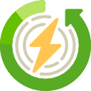
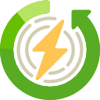

Fonte de energia renovável, limpa e sustentável
Fonte de energia renovável, limpa e sustentável 
 

A energia solar fotovoltaica é uma fonte de energia renovável e limpa que utiliza a radiação solar para gerar eletricidade.
Conectado à rede (ON GRID)
O sistema de energia solar on-grid
, ou sistema fotovoltaico conectado à rede, é o sistema que permanece conectado à rede de distribuição, assim, em momentos em que não há produção de energia, é possível utilizá-la da distribuidora e, em casos de excesso de produção, recebem-se créditos de energia.
Autônomo (OFF GRID)
O sistema de energia solar off-grid (sistema isolado ou sistema autônomo) tem como principal característica o “autossustento”, ou seja, é um sistema não conectado à rede elétrica, que armazena a energia solar excedente em baterias para ser utilizada quando não houver produção.
Híbrido
É um sistema que se alterna com sistemas de ON GRID e OFF GRID.
Não, a concessionária de energia irá cobrar o Kw mínimo mensal, que é correspondente ao custo de conexão à rede, Projetos homologados a partir de janeiro de 2023, pagarão além do mínimo, a tarifa de uso do fio B de forma escalonada.
Ao entrar em contato com a luz do sol, as células fotovoltaicas do painel solar reagem, convertendo a energia solar em elétrica. O inversor solar adapta a energia gerada, deixando-a compatível com as instalações elétricas, podendo abastecer os equipamentos elétricos.
Conectado à rede (ON GRID) - Mais comum a ser utilizado em residências e empresas, esse sistema distribui a geração automaticamente para concessionária de energia através de seu relógio de força (bidirecional). Ao final do mês a concessionária irá verificar o total gerado e fará a subtração do total consumido, ou seja, se o resultado for positivo, você gerou mais do que consumiu, desta forma você ficará com créditos a abater.
Sim, em quantas unidades que o cliente desejar desde que estejam no mesmo CPF ou CNPJ e que os locais sejam de concessão da mesma empresa de energia (NeoEnergia, CPFL, Enel...).
CFTV significa Circuito Fechado de Televisão. O principal objetivo de um Circuito Fechado de Televisão é fazer o monitoramento de diversos ambientes ao mesmo tempo e oferecer recursos para gravar as imagens geradas para uma futura utilização.
*Imagem (blog intelbras)
Esquema básico - Sistema de CFTV
O gravador de vídeo (DVR) é o núcleo do
sistema de CFTV onde as câmeras serão conectadas. Dentro dele pode ter um HD (Hard Disk) responsável pelo armazenamento das imagens (gravação). O DVR que é responsável pela geração das imagens que visualizamos em aparelhos de TV, celular, tablet e PC.
São encontrados nas versões de 4, 8, 16 e 32 canais.
Dome - Formato de uma cúpula arredondada, possuí infravermelho.
Bullet - Seu formato lembra um cilindro, possuí infravermelho.
Speed Dome - É uma câmera varifocal e motorizada. Seu
uso é para visualizar longas distâncias. Normalmente utilizada em indústrias, shoppings, sítios e grandes áreas que necessitam de monitoramento por câmeras de segurança. Alguns modelos possuem infravermelho.
GOTA - É uma câmera wifi muito utilizada
em residências e escritórios para visualizar pequenas áreas. Possui áudio bidirecional, ou seja, é possível falar e ouvir pessoas próximas a câmera através do aplicativo de celular.
Atualmente é possível encontrar câmeras de monitoramento nas tecnologias CVI, AHD,
TVI e CVBS (analógica).
Cada fabricante trabalha com uma tecnologia específica. Exemplos: Intelbras com CVI, Hikvision com TVI e assim por diante.
Outra tecnologia existente é a IP, na qual a câmera de monitoramento é interligda ao roteador através de cabo de rede ou via WIFI.
Logo MultiHD intelbras)
O sistema de alarme é um conjunto de equipamentos eletrônicos que tem sua finalidade de informar a ocorrencia de violação do local com efeito sonoro da sirene.
COM FIO - Para sua ligação é necessário passagem de cabo interligando o sensor até a central de alarme.
SEM FIO - Sua comunicação é através de radio frequencia, o mais comum é a 433,92 MHz mas também podem ser encontrados em outras frequências (Linha DUO da JFL ou AMT 8000 da Intelbras são alguns exemplos).
Central
- Núcleo do sistema que pode possuir um ruído audível dentro do local (sirene), um aviso à uma central de monitoramento ou até mesmo o comando para ligar uma luz.
Bateria - Sua função é manter o sistema ligado mesmo na falta de energia elétrica. Algumas fabricantes necessitam da bateria para que a sirene funcione corretamente;
Sensores - são equipamentos que detectam invasões em um ambiente e enviam o sinal para a central.
Sensores infravermelho passivo (IVP) – detectam a movimentação de luz infravermelha emitida por corpos quentes (como os de um humano). Assim, quando identificam a presença de uma pessoa, ‘avisam’ a central de alarme. Pela forma de detecção, esses sensores não devem ser utilizados próximos a locais com grande variação de temperatura, como locais onde há lareira, aquecedor, ar condicionado etc, apesar de haver modelos com compensação real de temperatura. Para amenizar os disparos em falso, estes dispositivos possuem diversos ajustes de sensibilidade e de alcance, como a Função Pet que pode ser ajustado para não identificar animais acima de um determinado peso limite pré-definido pelo usuário (20 kg ou 30 kg), permitindo que o seu animal de estimação transite livremente pela casa sem que o sistema de alarme dispare.
Sensores infravermelho ativo (IVA) – os sensores ativos trabalham em pares, onde o transmissor emite feixes de infravermelho – que é um tipo de luz bastante difícil de ser percebida pelo olho humano – para o receptor. Quando alguém ou alguma coisa ‘corta’ esse feixe de luz na área protegida, o sensor detecta e emite um sinal, se utilizados em portas dos elevadores e em portões automáticos impedem acidentes (antiesmagamento). Também pode ser usado para proteção de perímetros, aumentando ainda mais a segurança juntamente com as cercas elétricas, formando uma barreira virtual, ou até para proteger um perímetro maior em residências, comércios e indústrias.
O sistema de alarme é um conjunto de equipamentos eletrônicos que tem sua finalidade de informar a ocorrencia de violação do local com efeito sonoro da sirene.
MONITORADO - É um modelo de central é compatível para as empresas de monitoramento realizar a prestação de serviço sem a necessidade de equipamentos terceiros.
NÃO MONITORADO - É um modelo de central que não é compatível para as empresas de monitoramento, o proprietário que fica responsável para verificação da ocorrência.
Fica atento(a) não todas as centrais que possuí acesso remoto via aplicativo.
imagem blog intelbras
Sensores de micro-ondas – estes sensores captam os movimentos através do efeito Doppler. Ou seja, o dispositivo emite as micro-ondas e o objeto que está em movimento as reflete. Assim, o sensor micro-ondas é composto por três componentes: um emissor, um receptor e um circuito de análise e detecção que analisa os sinais refletidos.
Sensores magnéticos (de abertura) – são utilizados para detectar abertura e fechamento indevidos de janelas e portas e para evitar invasões. Funcionam através de um contato elétrico e um ímã. A função do ímã é manter o sensor acionado e, no caso de abertura de porta ou janela, há afastamento dos contatos, enviando imediatamente um sinal para a central de alarme. Pode ser encontrado com fio ou sem fio. No caso de ser sem a fiação, o sensor emite sinais de rádio frequência quando houver abertura da porta ou janela, que são captados pelo receptor conectado diretamente à central de alarme.
As cercas elétricas são compostas por fios de aço que conduzem os pulsos de alta tensão emitidos pelo eletrificador. O choque emitido pelo aparelho é de corrente pulsativa, impedindo dessa forma, que uma pessoa fique grudada na cerca recebendo choques continuamente.
É chamado de cerca elétrica convencional pelo tipo de haste utilizada que pode ser de perfil chato ou de perfil estrela. Suas versões mais comuns são de 4 ou 6 isoladores.
Eletrificador - Equipamento responsável em manter a cerca eletrificada com corrente pulsativa. Alguns modelos de eletrificador são compatíveis para acesso remoto via aplicativo através de um módulo ethernet (opcional);
Bateria - Sua função é manter o sistema ligado mesmo na falta de energia elétrica. Algumas fabricantes necessitam da bateria para que a sirene funcione corretamente;
Sirene - Alerta sonoro para indicar que houve violação do perímetro como corte do arame ou fuga para terra;
Hastes - Sua função é sustentar os isoladores e formar a cerca elétrica.
É chamado de cerca elétrica industrial pelo fato das hastes serem mais reforçadas. Utilizada normalmente em grandes áreas como industrias e condomínios. Encontradas nas versões de 4 e 6 isoladores.